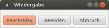

xsane2speech
Dieser Artikel wurde für die folgenden Ubuntu-Versionen getestet:
Ubuntu 16.04 Xenial Xerus
Ubuntu 14.04 Trusty Tahr
Zum Verständnis dieses Artikels sind folgende Seiten hilfreich:
 xsane2speech ist ein Wrapper-Skript für XSane, mit dem eine eingescannte Textvorlage sofort "vorgelesen" werden kann. Die dafür nötige Texterkennung erfolgt über tesseract-ocr oder Cuneiform-Linux, die Textausgabe kann über die Sprachsynthesizer-Programme eSpeak oder Festival erfolgen. Der Text wird gespeichert, er kann sowohl direkt wiedergegeben als auch via Lame als .mp3-Datei gespeichert werden. Zum Einsatz kommen außerdem yad (für Abfragen zum Verlauf), ggf. auch iconv und file
xsane2speech ist ein Wrapper-Skript für XSane, mit dem eine eingescannte Textvorlage sofort "vorgelesen" werden kann. Die dafür nötige Texterkennung erfolgt über tesseract-ocr oder Cuneiform-Linux, die Textausgabe kann über die Sprachsynthesizer-Programme eSpeak oder Festival erfolgen. Der Text wird gespeichert, er kann sowohl direkt wiedergegeben als auch via Lame als .mp3-Datei gespeichert werden. Zum Einsatz kommen außerdem yad (für Abfragen zum Verlauf), ggf. auch iconv und file  (zur Sicherstellung bzw. Überprüfung der richtigen Textkodierung).
(zur Sicherstellung bzw. Überprüfung der richtigen Textkodierung).
Vorbereitung¶
Folgende Pakete müssen installiert [1] werden:
xsane (universe)
imagemagick
file
tesseract-ocr (universe, sowie die gewünschten Sprachpakete)
espeak
lame (multiverse)
mbrola (multiverse, optional, sowie gewünschte Mbrola-Stimmen, Verwendung über eSpeak, ggf. auch Festival)
festival (universe, optional, sowie die gewünschten Stimmen und Wörterbuchdateien)
cuneiform (multiverse, optional, sinnvoll z.B. für Texte in Spalten, bietet viele Sprachen)
 mit apturl
mit apturl
Paketliste zum Kopieren:
sudo apt-get install xsane imagemagick file tesseract-ocr espeak lame mbrola festival cuneiform
sudo aptitude install xsane imagemagick file tesseract-ocr espeak lame mbrola festival cuneiform
Außerdem yad, seit 15.10 den Ubuntu-Quellen, für 14.04 aus einem PPA verfügbar.
Hinweis:
Unter Ubuntu 16.04 funktioniert für 64-bit-Systeme das Mbrola-Paket aus den Quellen nicht, siehe Mbrola, man kann sich aber mit einem aktualisierten funktionsfähigen Debian-Paket behelfen.
xsane2speech¶
Das Skript selbst kann als xsane2speech.sh  heruntergeladen oder in einen Editor [2] kopiert, abgespeichert und ausführbar[3] gemacht werden.
heruntergeladen oder in einen Editor [2] kopiert, abgespeichert und ausführbar[3] gemacht werden.
Hinweis:
Für die Verwendung von Festival muss, wenn ein anderer Player als Ausgabesoftware verwendet werden soll, der Befehl für die Audioausgabe in Zeile 167/169 angepasst werden, es muss dort der entsprechende Player eingesetzt werden! Festival aus den Quellen greift inzwischen auf aplay zurück, für die deutsche Version ist im Skript avplay vorgesehen.
1 2 3 4 5 6 7 8 9 10 11 12 13 14 15 16 17 18 19 20 21 22 23 24 25 26 27 28 29 30 31 32 33 34 35 36 37 38 39 40 41 42 43 44 45 46 47 48 49 50 51 52 53 54 55 56 57 58 59 60 61 62 63 64 65 66 67 68 69 70 71 72 73 74 75 76 77 78 79 80 81 82 83 84 85 86 87 88 89 90 91 92 93 94 95 96 97 98 99 100 101 102 103 104 105 106 107 108 109 110 111 112 113 114 115 116 117 118 119 120 121 122 123 124 125 126 127 128 129 130 131 132 133 134 135 136 137 138 139 140 141 142 143 144 145 146 147 148 149 150 151 152 153 154 155 156 157 158 159 160 161 162 163 164 165 166 167 168 169 170 171 172 173 174 175 176 177 178 179 180 181 182 183 184 185 186 187 188 189 190 191 192 193 194 195 196 197 198 199 200 201 202 203 204 205 206 207 208 209 210 211 212 213 214 215 216 217 218 219 220 221 222 223 224 225 226 227 228 229 230 231 232 233 234 235 236 237 238 239 240 241 242 243 244 245 246 247 248 249 250 251 252 253 254 255 256 257 258 259 260 261 262 263 264 265 266 267 268 269 270 271 272 273 274 275 276 277 278 279 280 281 282 283 284 285 286 287 288 289 290 291 292 293 294 295 296 297 298 299 300 301 302 303 304 305 306 307 308 309 310 311 312 313 314 315 316 317 318 319 320 321 322 323 324 325 326 327 328 329 330 331 332 333 334 335 336 337 338 339 340 341 342 343 344 345 346 347 348 349 350 351 352 353 354 355 356 357 358 359 360 361 362 363 364 365 | #!/bin/bash # xsane2speech - speech directly from xsane # Copyright (C) 2010 - 2013 Heinrich Schwietering # # This program is free software: you can redistribute it and/or modify # it under the terms of the GNU General Public License as published by # the Free Software Foundation, either version 3 of the License, or # (at your option) any later version. # # This program is distributed in the hope that it will be useful, # but WITHOUT ANY WARRANTY; without even the implied warranty of # MERCHANTABILITY or FITNESS FOR A PARTICULAR PURPOSE. See the # GNU General Public License for more details. # # You should have received a copy of the GNU General Public License # along with this program. If not, see <http://www.gnu.org/licenses/>. ## # ############################################################################## # # xsane2speech 0.2 # # *** OCR and TTS made simple *** # # ############################################################################## # # xsane2speech is a OCR wrapper to be able to use tesseract or cuneiform # with xsane, and utter the result via espeak or festival or save it as mp3 # # # TEMP_DIR=/tmp/ # folder for temporary files (TIFF & tesseract data) ERRORLOG="xsane2speech.log" # file where STDERR goes ESPEAK=espeak CUNEIFORM=cuneiform FESTIVAL=/PATH/TO/COMPILED/VERSION/OF/festival/bin #path for german festival and text2wave TESSERACT=tesseract USER=~/Dokumente/Vorlesen SEL=/usr/local/bin/select.sh MAINPROG=xsane2speech.sh if [[ -z "$1" ]] then echo "Usage: $0 [OPTIONS] xsane2speech converts files to TIF, scans them with Tesseract or Cuneiform outputs the text in a file and converts it to speech OPTIONS: -i <file1> define input file (any image-format supported) -o <file2> define output-file (*.txt) -l <lang> define language-data OCR engine should use -e <option> extra option for Cuneiform -z <ocr-engine> OCR engines cuneiform or tesseract (default) -y <synthesizer> define synthesizer festival or eSpeak (default) -x <settings> synthesizer settings; for festival, only [language] is possible Progress- & error-messages will be stored in this logfile: $TEMP_DIR$ERRORLOG xsane2tess depends on - XSane http://www.xsane.org/ - ImageMagick http://www.imagemagick.org/ - TesseractOCR https://github.com/tesseract-ocr - Cuneiform-Linux https://launchpad.net/cuneiform-linux - eSpeak http://espeak.sourceforge.net/ - festival http://www.cstr.ed.ac.uk/projects/festival - optional: german festival - iconv http://www.gnu.org/software/libiconv/ - yad http://sourceforge.net/projects/yad-dialog/ - lame http://lame.sourceforge.net/ - mbrola http://tcts.fpms.ac.be/synthesis/mbrola Some coding was stolen from 'ocube' http://www.geocities.com/thierryguy/ocube.html " exit fi endsel(){ { if pidof yad true ; then 1>&2 #the PIDs end up in the text without the 1&>2 $(killall -q -s SIGKILL yad) echo "MAIN: yad ended" 1>&2 rm -f /tmp/paused.txt fi } } endall(){ echo "MAIN: text $FILE_OUT-read.txt erased" 1>&2 echo "MAIN: ~~~+++~~~~+++~~~ xsane2speech aborted" $(date +%c) 1>&2 $(rm -f "$TXT_FILE.txt" ; rm -f "$FILE_OUT-read.txt" ; killall -q -s SIGKILL "$MAINPROG") 1>&2 } resetname(){ cat "$FILE_OUT-read.txt" "$FILE_OUT" > "$FILE_OUT-new" mv "$FILE_OUT-new" "$FILE_OUT-read.txt" rm -f "$FILE_OUT.txt" rm -f "$FILE_OUT" } cleanall(){ # clean text sed -i -r -e 's/››/"/g; s/[-—–]/-/g' "$TXT_FILE.txt" #replaces incompatibel -signs sed -i -r -e 's/fi/fi/g; s/fl/fl/g; s/[íı]/i/g' "$TXT_FILE.txt" # fixes ligature fi, fl, signs íı sed -i -r -e 'N;s/([[:lower:]])-\n([[:lower:]][^ ]* ?)/\1\2\n/;P;D' "$TXT_FILE.txt" #removes "Trennungen" sed -i -r -e 's/([]I])([aäeioöuü])/\ J\2/g' "$TXT_FILE.txt" ## replace misinterpreted ]/I with J sed -i -r -e 's/fš/ß/g' "$TXT_FILE.txt" #replaces misinterpreted fš with ß sed -i -r -e 's/<</"/g; s/>>/"/g' "$TXT_FILE.txt" #replaces incompatible signs } cleanfestival(){ # changes certain sign combinations festival can't use #sed -i -r -e 's/([[:alpha:]][[:alpha:]])([0-9])/\1 \2/g; s/([[:lower:]])([[:upper:]])/\1\l\2/g' "$FILE_OUT" sed -i -r -e 's/([[:upper:]])\.([[:upper:]])\./\1 \2 /g' "$TXT_FILE.txt" # remove dots in U.S. (example) sed -i -r -e 's/([[:alpha:]][[:alpha:]])([0-9])/\1 \2/g' "$TXT_FILE.txt" # dissembles character-digit-digit combinationes sed -i -r -e 's/[’‘]/`/g; s/[«»ˮ„”“‟]/"/g; s/,,/"/g' "$TXT_FILE.txt" #replaces incompatible utf-8 signs sed -i -r -e 's/››/"/g; s/[-—]/-/g' "$TXT_FILE.txt" #replaces incompatible utf-8 signs sed -i -r -e 's/‚/,/g' "$TXT_FILE.txt" sed -i -r -e 's/([0-9])([[:alpha:]])/\1 \2/g' "$TXT_FILE.txt" # dissembles digit-character combinationes iconv -t ISO8859-15 "$TXT_FILE.txt" -o "$TXT_FILE.txt" # recodes to ISO-8859-15 for festival } # get options... while getopts ":i:o:l:e:z:y:x:" OPTION do case $OPTION in i ) # input filename (with path) FILE_PATH="$OPTARG" ;; o ) # output filename FILE_OUT_LONG="$OPTARG" ;; l ) # language selection for OCR engine LANGUAGE="$OPTARG" ;; e ) # format selection for cuneiform EXTRA="$OPTARG" ;; z ) # OCR engine OCRENG="$OPTARG" ;; y ) # synthesizer selection (default is eSpeak) SYNTH="$OPTARG" ;; x ) # Synthesizer-settings (language, speed etc) SYNSET="$OPTARG" ;; esac done # strips extension from FILE_OUT_LONG FILE_OUT="${FILE_OUT_LONG%.*}" # redirect STDERR to ERRORLOG exec 2>>"$TEMP_DIR""$ERRORLOG" echo 1>&2 echo "Start ~~~+++~~~~+++~~~" $(date +%c) 1>&2 # set variable for sound processing { if [[ $SYNTH == "festival" ]] ; then { if [[ $SYNSET == "german" ]] ; then SOUND=avplay else SOUND=aplay fi } else SOUND=espeak SYNTH=espeak fi } echo "MAIN: $SOUND set for $SEL" 1>&2 #check charset if output file exists and change it is neccesary { if [ -f "$FILE_OUT.txt" ] ; then CHECKCHAR=$(file -b "$FILE_OUT.txt") { if [ "$CHECKCHAR" != "empty" ] ; then echo "MAIN: File exists, Charset is $CHECKCHAR" 1>&2 mv "$FILE_OUT.txt" "$TXT_FILE.txt" cleanall { if [ $SYNTH != "festival" ] ; then { if [[ "$CHECKCHAR" == "ISO-8859 text" ]] ; then LC_ALL=C iconv -f ISO8859-15 -t UTF-8 "$TXT_FILE.txt" -o "$TXT_FILE.txt" echo "MAIN: Charset changed to UTF-8" 1>&2 fi } else { if [ "$CHECKCHAR" == "UTF-8 Unicode text" ] ; then cleanfestival echo "MAIN: Charset changed to ISO8859-15" 1>&2 fi } fi } mv "$TXT_FILE.txt" "$FILE_OUT.txt" fi } fi } TXT_FILE="$TEMP_DIR""OCRResult" TIF_FILE="$TEMP_DIR""OCRResult".tif # converting image into TIFF (ImageMagick] convert "$FILE_PATH" -compress none "$TIF_FILE" 1>&2 # check for requested ocr engine { if [[ "$OCRENG" == "cuneiform" ]] ; then # start OCR "$CUNEIFORM" -l "$LANGUAGE" -f smarttext -o "$TXT_FILE".txt "--$EXTRA" "$TIF_FILE" 2> /dev/null echo "MAIN: cuneiform -l "$LANGUAGE" -f smarttext used" 1>&2 # remove strange signs produced by cuneiform sed -i -r -e 's/—/-/g; s/â€"/-/g' "$TXT_FILE".txt echo "MAIN: cuneiform text cleaned" 1>&2 else # tesseract is default, start OCR (tesseract expands output with *.txt) tesseract "$TIF_FILE" "$TXT_FILE" -l "$LANGUAGE" 2> /dev/null # distinguish between J an I, which are often identical in "Fraktur" { if [[ "$LANGUAGE" == "deu-frak" ]]; then sed -i -r -e 's/([J])([bcdfghjklmnpqrstvwxyzß])/\I\2/g' "$TXT_FILE".txt fi } echo "MAIN: tesseract -l "$LANGUAGE" used" 1>&2 fi } cleanall #iconv -t UTF-8 "$TXT_FILE.txt" -o "$TXT_FILE.txt" { if [[ "$SYNTH" == "festival" ]] ; then cleanfestival echo "MAIN: text cleaned and recoded for festival" 1>&2 fi } # add scanned text to FILE_OUT cat "$TXT_FILE".txt > "$FILE_OUT" # deletes graphic file after use rm "$TIF_FILE" #rename file as $FILE_OUT-read.txt { if [ -f "$FILE_OUT-read.txt" ] ; then resetname elif [ -f "$FILE_OUT.txt" ] ; then mv "$FILE_OUT.txt" "$FILE_OUT-read.txt" resetname else mv "$FILE_OUT" "$FILE_OUT-read.txt" rm -f "$FILE_OUT.txt" fi } # Asks for further scans to be added END=$(DISPLAY=:0.0 yad --geometry -0-0 --title="xsane2speech" --button=Ja:2 --button=Nein:4 --text="Sollen weitere Textpassagen angehängt werden?") ret=$? { if [[ $ret -eq 4 ]] ; then SPELLCHECK=$(DISPLAY=:0.0 yad --geometry -0-0 --timeout=10 --title="Rechtschreibung" --button=Ja:2 --button=Nein:4 --text="Rechtschreibprüfung?") ret=$? { if [[ $ret -eq 2 ]]; then gedit "$FILE_OUT-read.txt" # gnome-terminal -x hunspell -d de_old "$FILE_OUT-read.txt" #f or old german spelling # gnome-terminal -x aspell -c "$FILE_OUT-read.txt" echo "MAIN: gedit used for spellchecking" 1>&2 fi } TEXTREG=$(DISPLAY=:0.0 yad --geometry -0-0 --text="Die Text-Erkennung \nist abgeschlossen!") ret=$? rm -f "$FILE_OUT-read.txt~" { if [[ $ret -eq 1 ]] ; then endall fi } # check if direct tts or saving as mp3 is requested { if [[ "$SYNTH" == "festival" ]] ; then mp3=$(DISPLAY=:0.0 yad --geometry -0-0 --title="Ausgabe" --button=Abbruch:6 --button="als .mp3":4 --button=direkt:8 --text="Wie soll die Ausgabe erfolgen?") else mp3=$(DISPLAY=:0.0 yad --geometry -0-0 --title="Ausgabe" --button=Abbruch:6 --button="als .mp3":4 --button=direkt:2 --button="direkt ohne Wechsel":8 --text="Wie soll die Ausgabe erfolgen?") fi } ret=$? { if [[ $ret -eq 6 ]] ; then endall elif [[ $ret -eq 2 ]] || [[ $ret -eq 8 ]] ; then # Start and options for "SEL" $("$SEL" "$SOUND" "$TXT_FILE.txt" "$FILE_OUT-read.txt" "$TEMP_DIR" "$ERRORLOG" "$SYNTH" "$SYNSET" "$SEL" "$MAINPROG") 2> /dev/null & # check for requested synthesizer, eSpeak is default { if [[ "$SYNTH" != "festival" ]] ; then echo "MAIN: eSpeak with options $SYNSET used for utterance" 1>&2 $("$ESPEAK" $SYNSET -f "$FILE_OUT-read.txt" 2> /dev/null) else echo "MAIN: festival --language $SYNSET used for utterance" 1>&2 { if [[ "$SYNSET" == "german" ]] ; then # german festival is requested $("$FESTIVAL"/festival --heap 10000000 --language "$SYNSET" --tts "$FILE_OUT-read.txt") 2> /dev/null # other festival languages used -> festival in "PATH" used else $(festival --language "$SYNSET" --tts "$FILE_OUT-read.txt") 2> /dev/null fi } fi } endsel { if [[ $ret -eq 2 ]] ; then { if [[ "$SYNTH" != "festival" ]] ; then VOICE=$(DISPLAY=:0.0 yad --geometry -0-0 --timeout=10 --title="Stimme" --button=Ja:4 --button=Nein:2 --text="Soll eine andere Stimme verwendet werden?") ret=$? LOOPSET=TESTING while [[ $LOOPSET == "TESTING" ]] ; do { if [[ $ret -eq 4 ]] ; then SYNSET=-v$(DISPLAY=:0.0 yad --geometry -0-0 --title="Spachkürzel" --text "eSpeak-Sprachenkürzel und ggf. Optionen eingeben:" --entry --entry-text="mb-de5 -s145 -g3") echo "MAIN: eSpeak with options $SYNSET used for utterance" 1>&2 $("$SEL" "$SOUND" "$TXT_FILE.txt" "$FILE_OUT-read.txt" "$TEMP_DIR" "$ERRORLOG" "$SYNTH" "$SYNSET" "$SEL" "$MAINPROG") 2> /dev/null & # Options for "SEL" $("$ESPEAK" $SYNSET -f "$FILE_OUT-read.txt" 2> /dev/null) endsel VOICE2=$(DISPLAY=:0.0 yad --geometry -0-0 --timeout=10 --title="Stimme" --button=Ja:4 --button=Nein:2 --text="Noch eine andere?") ret=$? fi } { if [[ $ret -eq 2 ]] || [[ $ret -eq 70 ]] ; then LOOPSET=ENDING break fi } done fi } fi } # check if a recording is wanted after listening END2=$(DISPLAY=:0.0 yad --geometry -0-0 --title="mp3" --button=Ja:4 --button=Nein:2 --text="Soll eine .mp3-Datei erstellt werden?") ret=$? fi } # set name for dirctory and file to save mp3 { if [[ $ret -eq 4 ]] ; then FILE=$(DISPLAY=:0.0 yad --file-selection --width 700 --height 500 --save --confirm-overwrite --title "Name und Ort zum Speichern auswählen" --filename="$USER"/"$FILE_OUT.mp3") ret=$? { if [[ $ret -eq 1 ]] || [[ $ret -eq 70 ]] ; then endall else # check for requested synthesizer { if [[ "$SYNTH" == "festival" ]] ; then { if [[ "$SYNSET" == "german" ]] ; then # german festival is requested $($FESTIVAL/text2wave "$FILE_OUT-read.txt" -o "$TEMP_DIR"temp.wav && lame --tt ${FILE##*/} --ta Hörbuch -b 16 -h -V2 -S "$TEMP_DIR"temp.wav "$FILE") 2> /dev/null else # other festival languages used $(text2wave "$FILE_OUT-read.txt" -o "$TEMP_DIR"temp.wav && lame --tt ${FILE##*/} --ta Hörbuch -b 16 -h -V2 -S "$TEMP_DIR"temp.wav "$FILE") 1>&2 fi } # remove temporary wave file rm "$TEMP_DIR"temp.wav # eSpeak is default else $("$ESPEAK" $SYNSET -f "$FILE_OUT-read.txt" --stdout | lame --tt ${FILE##*/} --ta Hörbuch -b 16 -h -V2 -S - "$FILE") 1>&2 fi } $(DISPLAY=:0.0 yad --geometry -0-0 --text="Die mp3-Erstellung \nist abgeschlossen!" --timeout=10) 1>&2 echo "MAIN: $SYNTH --language $SYNSET used for mp3" 1>&2 fi } fi } SAVEFILE=$(yad --geometry -0-0 --timeout=10 --text "Text aufbewahren?" --title "Textspeicherung" --button=Ja:2 --button=Nein:4) ret=$? { if [[ $ret -eq 2 ]] || [[ $ret -eq 70 ]] ; then mv $FILE_OUT-read.txt $FILE_OUT.txt echo "MAIN: text saved as $FILE_OUT.txt" 1>&2 elif [[ $ret -eq 4 ]] ; then rm "$FILE_OUT-read.txt" ; echo "MAIN: text $FILE_OUT-read.txt erased" 1>&2 fi } fi } # delete temporary files rm -f "$TXT_FILE".txt rm -f /tmp/audiofile_* rm -f /tmp/FestplayPID.txt rm -f /tmp/paused.txt echo "MAIN: END ~~~+++~~~~+++~~~" $(date +%c) 1>&2 |
Das Skript ist eine Weiterentwicklung des xsane2tess-Skriptes, das auf ubuntu-fr.org  veröffentlicht worden ist.
veröffentlicht worden ist.
Außerdem wird das Steuerskript select.sh (Download ) benötigt, um die Sprachausgabe zu unterbrechen, wieder aufzunehmen oder vorzeitig ganz beenden zu können.
1 2 3 4 5 6 7 8 9 10 11 12 13 14 15 16 17 18 19 20 21 22 23 24 25 26 27 28 29 30 31 32 33 34 35 36 37 38 39 40 41 42 43 44 45 46 47 48 49 50 51 52 53 54 55 56 57 58 59 60 61 62 63 64 65 66 67 68 69 70 71 72 73 74 75 76 77 78 79 80 81 82 83 84 85 86 87 88 89 90 91 92 93 94 95 96 97 98 99 100 101 | #!/bin/bash # # Sound control script for xsane2speech - speech directly from xsane # Copyright (C) 2010, 2011, 2013 Heinrich Schwietering # # This program is free software: you can redistribute it and/or modify # it under the terms of the GNU General Public License as published by # the Free Software Foundation, either version 3 of the License, or # (at your option) any later version. # # This program is distributed in the hope that it will be useful, # but WITHOUT ANY WARRANTY; without even the implied warranty of # MERCHANTABILITY or FITNESS FOR A PARTICULAR PURPOSE. See the # GNU General Public License for more details. # # You should have received a copy of the GNU General Public License # along with this program. If not, see <http://www.gnu.org/licenses/>. # exec 2>>"${4}""${5}" SOUND="${1}" TXT_FILE="${2}" FILE_OUT="${3}" TEMP_DIR="${4}" ERRORLOG="${5}" SYNTH="${6}" SYNSEL="${7}" SEL="${8}" MAINPROG="${9}" endall(){ $(killall -q -s SIGKILL "$SYNTH") { if [[ "$SYNTH" == "festival" ]] ; then $(killall -q -s SIGKILL "$SOUND") { if [[ "$SYNSEL" != "german" ]] ; then $(killall -q -s SIGKILL audsp) sleep 0.1 $(killall -q -s SIGKILL "$SOUND") fi } fi } rm -f /tmp/paused.txt rm -f /tmp/audiofile_* rm -f /tmp/FestplayPID.txt } endsel(){ $(killall -q -s SIGKILL "$SEL") break } #delay until "$SOUND" is started { for i in {1..16}; do { if pidof "$SOUND" true; then break else echo "waiting for $SOUND" 1>&2 sleep 0.5 fi } done } while pidof "$SOUND" true do action=$(DISPLAY=:0.0 yad --title Wiedergabe --geometry -0-0 --button="Pause/Play":2 --button=Beenden:4 --button=Abbruch:8 ) ret=$? { if [[ $ret -eq 2 ]]; then { if [[ "$SOUND" == "gnome-mplayer" ]]; then echo $(pgrep -n mplayer) > /tmp/FestplayPID.txt else echo $(pgrep -n "$SOUND") > /tmp/FestplayPID.txt fi } PAPID=$(cat /tmp/FestplayPID.txt) echo "SEL: pid $PAPID" 1>&2 { if [ -f /tmp/paused.txt ] ; then sleep 0.1 $(kill -SIGCONT "$PAPID") rm -f /tmp/paused.txt echo "SEL: utterance resumed" 1>&2 else $(kill -SIGSTOP "$PAPID") echo "SEL: paused" > /tmp/paused.txt echo "SEL: utterance paused" 1>&2 fi } elif [[ $ret -eq 4 ]] ; then endall echo "SEL: utterance canceled" 1>&2 sleep 0.6 endsel elif [[ $ret -eq 8 ]] ; then endall rm "$TXT_FILE" 1>&2 rm "$FILE_OUT" 1>&2 echo "SEL: abborted ~~~+++~~~~+++~~~" $(date +%c) 1>&2 $(killall -q -s SIGKILL "$MAINPROG") # sleep 0.1 $(killall -q -s SIGKILL yad) endsel fi } done |
Beide Skripte kopiert man am besten mit Root-Rechten[4] nach /usr/local/bin, so lässt sich das Programm von allen Benutzern verwenden.
Konfiguration¶
Das Temporärverzeichnis in xsane2speech.sh (Zeile 33) kann entsprechend der eigenen Wünsche angepasst werden, dort wird auch die xsane2speech.log-Datei abgelegt. Die weiteren Variablen müssen ggf. geändert werden, wenn die Programme in anderen als den üblicherweise im PATH eingetragenen Verzeichnissen liegen. Dies gilt insbesondere bei der Verwendung von erweiterten Festival-Versionen, das Skript ermöglicht die Verwendung der "Standard"-Installation aus den Paketquellen neben einer selbsterstellten deutschsprachigen Version.
Funktionsweise¶
Die mit XSane eingescannten Vorlagen werden einer Texterkennung unterzogen (Standard ist tesseract-ocr, Alternative Cuneiform-Linux, womit eine Vielzahl von Sprachen abgedeckt ist). Es sind beliebig viele kombinierte Scans möglich, der Abschluss der Texterfassung wird im yad-Fenster bestätigt. Der gesamte Text kann ggf. vor Ausgabe in einem Texteditor[2] oder mit Hunspell/Aspell korrigiert werden, z.T. werden typische Erkennungs-Fehler direkt ausgebügelt (Funktionen cleanall bzw cleanfestival). So erkennt Cuneiform z.B. gerne Bindestriche als —, auch für Festival werden nicht-auslesbare Zeichenkombinationen "entschärft". Über die Synthesizer eSpeak (Standard-Einstellung) oder Festival wird der Text dann in Sprache umgewandelt, auch hierfür stehen eine Vielzahl von Sprachen zur Verfügung, es können über eSpeak auch viele Mbrola-Stimmen zum Einsatz kommen. Die Ausgabe erfolgt entweder direkt, oder sie wird in einer .mp3-Datei aufgezeichnet, dafür kommt lame zum Einsatz. Beim Einsatz von Festival-Stimmen erfolgt zuvor eine Umwandlung in eine Wave-Datei mit dem Festival-eigenen Programm text2wave.
Benutzung¶
In "XSane -> Einstellung -> Konfiguration -> Texterkennung" wird als OCR-Befehl "/PFAD/ZU/xsane2speech.sh" sowie dazugehörige Optionen zur Steuerung angegeben. Als weitere Optionen werden "-i", für die Ausgabedatei "-o" angeben, die weiteren Felder bleiben leer. Die Option "Benutze GUI Fortschritts Pipe" darf nicht angehakt sein (nicht nur wegen der orthographischen Mängel...), da sonst das Wrapper-Skript nicht geschlossen werden kann, es bleiben sonst etliche nicht abwürgbare "Zombie"-Prozesse zurück, die erst mit Beenden von XSane abgeschlossen werden.
Beispiele¶
xsane2speech.sh -l deu -x "-vmb-de6 -s165 -g2"
verwendet Tesseract mit deutscher Sprache, für die Sprachausgabe wird eSpeak mit der Mbrola-Stimme de6 eingesetzt, Sprechgeschwindigkeit 165 Wörter pro Minute, Pauseneinstellung zwischen den Wörten ca. 20 ms. Diese Feineinstellungen kann man am besten in Gespeaker ausprobieren, wo sie über Schiebregeler leicht einstellbar sind. Zur Verwendung der mbrola-Stimmen siehe auch mbrola-Stimmen einbinden.
xsane2speech.sh -z Cuneiform -l ita -e "fax" -y festival -x italian
setzt Cuneiform-Linux für italienischen Text ein, das Format ist Text mit Zeilenumbrüchen wie in der Vorlage, Einstellung für eine Vorlage in Fax-Qualität. Als Sprachausgabe kommt Festival mit italienischer Stimme zum Einsatz. Informationen zur näheren Festlegung der Sprecherstimme findet man unter Sprache/Stimme festlegen.
Achtung!
Die Angaben müssen sehr exakt erfolgen, es dürfen zwischen den Optionen nur einfache Leerzeichen verwendet werden, sonst kommt es zu Fehlern!
Im Forum findet sich ein Skript, mit dem dialoggeführt fehlerfreie Konfigurationen für verschiedene Einstellungen erstellt und für weitere Verwendung auch abgespeichert werden können. Es verwendet ebenfalls yad für die Dialoge.
Optionen¶
Die verfügbaren Optionen für das Skript sind:
| Optionen für xsane2speech | |
| Argument | Funktion |
-z OCR-PROGRAMM | Tesseract, Cuneiform, Tesseract ist der Standard, wenn keine Angabe gemacht wird |
-l SPRACHKÜRZEL | Legt die verwendete Sprache für das OCR-Programm fest, ohne Angabe wird englisch (eng) verwendet |
-e OPTION | Extra-Optionen für Cuneiform-Linux, möglich matrix (Nadeldrucker-Vorlage), singlecolumn (einspaltig auslesen) und fax (Vorlage in Fax-Qualität) |
-y SYNTHESIZER | festival oder espeak (Standard wenn keine Angabe erfolgt) |
-x "SYNTHESIZER-OPTION(EN)" | eSpeak-Option(en), müssen in Anführungszeichen stehen; für Festival ist hier nur ein Sprachangabe möglich. Ohne Angabe wird englisch als Ausgabesprache verwendet. |
Für Cuneiform wird standardmäßig als Format -f smarttext verwendet, der Text wird damit entsprechend der Vorlage an Zeilenende umgebrochen. Es lässt sich hier auch die Option text verwenden, die bei deutlichem Abstand zwischen den Zeilen Absatzumbrüche erstellt und den Text ansonsten in einer Zeile durchschreibt.
Die Vorlage wird in XSane im Betrachter-Modus erstellt. Als Auflösung werden 300 dpi empfohlen, die besten Ergebnisse erzielt man meist mit der Einstellung "Strichzeichnung" (für sehr kleine Schriften, bei Waschzettel etc. ggf. höhere Auflösungen verwenden). Im Betrachter die Texterkennung ( -Taste) wählen. Alternativ kann auch das Ausgabeformat "TEXT" gewählt werden, und als Modus "Speichern", wenn keine weiteren Einstellungen nötig sind. Dann wird der Text direkt umgewandelt, ohne den Betrachter zu öffnen. Weitere Scans können bei Beibehaltung des Dateinamens direkt angehängt werden. Eine Angabe einer Endung ist nicht nötig, es ist auch möglich, später an eine bestehende Textdatei weitere Teile anzuhängen (dann darf keine Endung verwendet werden). Das Skript überprüft dabei, ob es sich um in UTF-8 oder ISO 8859-1 codierte Texte handelt und formt sie bei Bedarf um.
-Taste) wählen. Alternativ kann auch das Ausgabeformat "TEXT" gewählt werden, und als Modus "Speichern", wenn keine weiteren Einstellungen nötig sind. Dann wird der Text direkt umgewandelt, ohne den Betrachter zu öffnen. Weitere Scans können bei Beibehaltung des Dateinamens direkt angehängt werden. Eine Angabe einer Endung ist nicht nötig, es ist auch möglich, später an eine bestehende Textdatei weitere Teile anzuhängen (dann darf keine Endung verwendet werden). Das Skript überprüft dabei, ob es sich um in UTF-8 oder ISO 8859-1 codierte Texte handelt und formt sie bei Bedarf um.
Die .txt-Datei wird dann im angegebenen Verzeichnis (Schreibrechte nötig!) als AUSGABENAME.txt abgelegt. Die Qualität der Texterkennung ist natürlich von der Qualität und Aufbau der Vorlage abhängig; je "verschachtelter" Text und Grafikelemente sind, desto schwieriger wird die exakte Zerlegung, und damit die Texterkennung. Daher sollte man ggf. einzelne Ausschnitte in der richtigen Reihenfolge scannen, und die Bilder dabei auslassen. Bei Verwendung von deu-frak als Tesseract-Sprache sortiert das Skript I und J, die in Fraktur-Schriften oft mit demselben Zeichen dargestellt werden, danach, ob nach dem Zeichen ein Vokal (dann ->J) oder ein Konsonant (dann ->I) folgt.
Die yad-Fenster lassen sich über die Maus oder Tastatur ( → , ← , ⏎ ) bedienen.
Nach jedem Scan wird abgefragt, ob Text aus weiteren Scans an die bestehende Textdatei angehängt werden soll. Dabei auf den gleichen Namen der Ausgabedatei achten, die Nummerierungsfunktion in XSane sollte daher nicht genutzt werden. Die Sprachausgabe erfolgt, wenn keine weiteren Scans mehr angehängt werden sollen; dazu erscheint eine Abfrage, ob der Text direkt ausgegebene oder als .mp3-Datei gespeichert werden soll. Für eSpeak können nach erfolgter Wiedergabe bzw. "Beenden" weitere Stimmen/Einstellungen eingesetzt werden. Wenn im Dialog "direkt ohne Wechsel" ausgewählt wird, unterbleibt die Abfrage dazu.
Wird die .mp3-Erstellung gewählt, kann im sich darauf öffnenden Fenster der Speicherort und der Dateiname ausgewählt werden, standardmäßig ist ~/Dokumente/Vorlesen vorgesehen (den Ordner ggf. anlegen!). Als Grundlage ist der Name der Text-Datei eingestellt, an den dann automatisch ein .mp3-Endung angehängt wird. Der vorgegebene Speicherort kann im Skript unter der Variabel $USER verändert werden, der dort gewählte Ordner muss allerdings existent sein.
 Wenn die direkte Wiedergabe gewählt wurde, öffnet sich ein yad-Fenster mit den Steuereinstellungen "Pause/Play", "Beenden" und "Abbruch". "Beenden" führt dazu, dass die Sprachausgabe abgebrochen, und weiter im Skript-Ablauf vorgegangen wird. "Abbruch" kann dazu verwendet werden, die Wiedergabe abzubrechen, und den dazugehörigen Text direkt zu löschen, man kehrt dann auf die XSane-Ebene zurück. Das Fenster schließt sich, wenn keine Eingabe gemacht wird, mit Ende der Sprachausgabe automatisch. Nach dem "Vorlesen" hat man noch einmal die Möglichkeit, die Sprachausgabe als .mp3-Datei abzuspeichern, falls man auch weiterhin auf die Inhalte zurückgreifen möchte; das Verfahren ist identisch mit dem zur Abspeicherung beschriebenen.
Nach Abschluss wird abgefragt, ob die zugehörige Textdatei erhalten oder gelöscht werden soll; im yad-Fenster die entsprechende Angabe machen.
Einige der Fenster schließen sich nach einer gewissen Zeit automatisch, wenn keine Angabe erfolgt; der Wert wird im Skript in den yad-Angaben über die Option --timeout=x in Sekunden geregelt und kann den eigenen Wünschen entsprechend angepasst, oder auch ganz gelöscht werden.
Integration der Rechtschreibprüfung¶
Der Text lässt sich vor der Ausgabe/Speicherung mit einer Rechtschreibprüfung korrigieren. Die Funktion ist im Code des Hauptskriptes (Zeilen 251-257) enthalten, wenn nicht benötigt, können die Zeilen auskommentiert (# am Zeilenanfang) werden.
SPELLCHECK=$(DISPLAY=:0.0 yad --geometry -0-0 --timeout=10 --title="Rechtschreibung" --button=Ja:2 --button=Nein:4 --text="Rechtschreibprüfung?")
ret=$?
{ if [[ $ret -eq 2 ]]; then
gedit "$FILE_OUT-read.txt"
# gnome-terminal -x hunspell -d de_old "$FILE_OUT-read.txt" #f or old german spelling
# gnome-terminal -x aspell -c "$FILE_OUT-read.txt"
echo "MAIN: gedit used for spellchecking" 1>&2
fi }In diesem Beispiel ist entweder die Möglichkeit vorgesehen, gedit direkt mit der Texttdatei aufzurufen, und dort die Rechtschreibkorrektur einzusetzen (gedit verwendet Aspell; es ist natürlich auch jeder andere Texteditor möglich), oder (hier auskommentiert) Hunspell oder Aspell in einem externen Terminal-Fenster zu verwenden. Die Verwendung eines Editor hat den Vorteil, dass auch zwar prinzipiell richtig geschriebene, in dem Zusammenhang aber falsch erkannte Wörter gefunden und korrigiert werden können. Die Ausgabe sollte natürlich erst danach erfolgen, es ist aber auch möglich, den Text während des Abhörens noch zu korrigieren, um ihn dann für die mp3-Erstellung "korrekt" verwenden zu können. Standardmäßig wird die systemweit gesetzte Spracheinstellung verwendet, für andere Sprachen müssten die entsprechenden Optionen verwendet werden.
Spracheinstellung für die Festival-Wiedergabe¶
Um Texte mit Umlauten/ß direkt mit der deutschen Festival-Version wiedergeben zu können, ohne das gesamte System umstellen zu müssen, wird im Standard-Skript mit eine Zeichensatzkonvertierung in ISO-8859-15 mit iconv vorgenommen. Allerdings kann es dabei zu Fehlern kommen, wenn im Text Zeichen vorhanden sind, die nicht im ISO-Format vorhanden sind. Die Wiedergabe wird in einem solchen Fall direkt an der Stelle mit dem Fehlzeichen abgebrochen, da der nachfolgende Text nicht mehr konvertiert wird. Viele Fehlerquellen werden vom Skript bereits abgefangen, falls weitere auftreten, kann man die sed-Befehle nach diesem Muster erweitern:
sed -i -r -e 's/PROBLEMATISCHES ZEICHEN/ERSATZ DAFÜR/g; "$TXT_FILE" #remove incompatible utf-8 signs
Probleme¶
Falls Probleme auftauchen, liefert das angelegte Protokoll xsane2speech.log ggf. Hinweise zur Lösung. Je nach Rechnerleistung ist es eventuell nötig, die sleep-Werte im select.sh anzupassen, wenn z.B. die Wiedergabe trotz "Beenden/Abbruch" nicht aufhört.
Unter Ubuntu 16.04 erscheint im Log für jeden Yad-Aufruf der Eintrag
Gtk-Message: GtkDialog mapped without a transient parent. This is discouraged.
Der Eintrag an sich ist harmlos, stört allerdings die Übersicht erheblich. Man wird ihn los, indem man im Skript jeden Yad-Aufruf mit einem ans jeweilige Zeilenende gesetztem
2> dev/null
also z.B.
TEXTREG=$(DISPLAY=:0.0 yad --geometry -0-0 --text="Die Text-Erkennung \nist abgeschlossen!" 2> dev/null)
die Meldung ins Nirvana schickt.
Hinweis:
Bitte im Ubuntu liest vor! (Projekt-Thread) nachfragen, wenn es zu merkwürdigen Verhalten oder unlösbaren Dingen kommt, oder auch, wenn es Wünsche, Verbesserungsvorschläge etc. gibt!
Die Meldung
bt_audio_service_open: connect() failed: Connection refused (111)
ist vernachlässigbar, sie bezieht sich auf eine Bluetooth-Verbindung, die nichts mit dem Programm zu tun hat. Ggf. kann man das Paket bluez-alsa entfernen, wenn man es nicht benötigt.
Festival mit deutschsprachiger Ausgabe¶
Die Meldung
/PFAD/ZU/xsane2speech.sh: Zeile xxx: German: Kommando nicht gefunden.
ist vernachlässigbar, sie wird ggf. von text2wave ausgelöst, hat aber keinen Einfluss auf die Funktion. Auch die Meldung
Audio spooler has died unexpectedly closing a file left open: /PFAD/ZUR/AUSGABEDATEI.txt
ist harmlos, sie tritt immer auf, wenn man die unter Festival integrierte Sprachausgabe abbricht.
Mbrola¶
Einige der deutschen Mbrola-Stimmen (de4, auch unter eSpeak einsetzbar, und ganz besonders de8, was eigentlich keine "deutsche", sondern eine bayrische Dialekt-Stimme ist) können mit bestimmten Diphonen nicht umgehen; im Log erscheinen Angaben wie
Warning: g-ts unkown, replaced with _-_ Warning: 6-6 unkown, replaced with _-_ Warning: 6-@ unkown, replaced with _-_
und die fehlenden Laute werden weggelassen, was sehr störend sein kann. Unter Festival kann das etwas gelindert werden, siehe Festival - Tipps und Tricks.
Alternativen¶
Sprachausgabe
 Übersichtsseite
ÜbersichtsseiteSkripte/Book-To-MP3 - "Paten"-Skript, das verschiedene Dateiformate in .mp3-Dateien umwandeln kann
Skripte/pdf2mp3 - vegleichbares Python-Skript, für PDF- und ascii-Daten zur Umwandlung in Audiodateien (.wav oder .mp3)
KMouth - kann ebenfalls Texte vorlesen und aufnehmen
Links¶
Ubuntu liest vor! - Ursprungsthread im Forum
eSpeak - verwendeter Standard-Synthesizer mit umfangreicher Sprachunterstützung
Festival - alternativer Synthesizer, mit Stimmen, die auf natürlichen Sprechern beruhen
Festival/Kompilieren - für deutschsprachige Festival-Unterstützung notwendig
- Erstellt mit Inyoka
-
 2004 – 2017 ubuntuusers.de • Einige Rechte vorbehalten
2004 – 2017 ubuntuusers.de • Einige Rechte vorbehalten
Lizenz • Kontakt • Datenschutz • Impressum • Serverstatus -
Serverhousing gespendet von